HƯỚNG DẪN ĐĂNG KÝ TỜ KHAI XUẤT KHẨU
Để đăng ký mới tờ khai nhập khẩu, bạn vào menu : "Tờ khai hải quan / Đăng ký mới tờ khai xuất khẩu (EDA)" như hình ảnh sau đây.
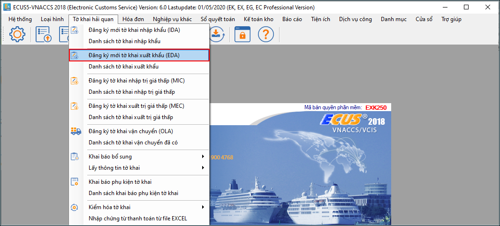
Màn hình tờ khai hiện ra như sau: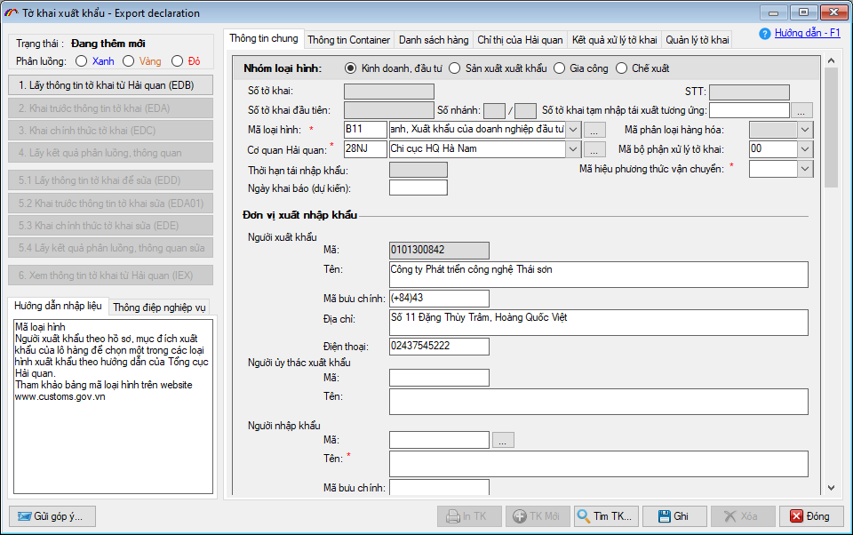
Để nhập liệu chi tiết cho tờ khai, các bạn thực hiện theo các phần hướng dẫn sau đây:
- Ô mã để trống
- Ô tên gồm 12 ký tự, trong đó nhập mã hãng hàng không (02 kí tự), số chuyến bay (04 kí tự), 1 gạch chéo, ngày/tháng (ngày: 02 kí tự, tháng 03 kí tự viết tắt của các tháng bằng tiếng Anh) ví dụ: VN8720/11MAR
-
Văn bản pháp quy: Là nơi bạn nhập vào các mã văn bản pháp luật về quản lý hàng hóa, kiểm tra chuyên ngành liên quan đến hàng hóa nhập khẩu, bạn có thể nhập vào tối đa 05 văn bản pháp quy cho cùng một tờ khai. Ví dụ hàng hóa nhập khẩu của tờ khai là hàng liên quan đến chất nổ công nghiệp, bạn chọn mã văn bản pháp luật về quy định đối với chất nổ công nghiệp AM.
-
Giấy phép nhập khẩu: Trường hợp hàng hóa yêu cầu phải có giấy phép xuất nhập khẩu, giấy kết quả kiểm tra chuyên ngành thì ô thứ nhất bạn nhập vào mã loại giấy phép, ô số 2 nhập vào số giấy phép hoặc kết quả kiểm tra chuyên ngành. Ví dụ hàng hóa bạn nhập là hàng liên quan đến chất nổ công nghiệp, bạn được cơ quan chuyên ngành kiểm tra và cấp phép nhập khẩu thì chọn :
- Ô mã: chọn AM02 – Giấy phép hướng dẫn về vật liệu chất nổ tại việt nam
- Ô số: Nhập vào số giấy phép do cơ quan chuyên ngành cấp.
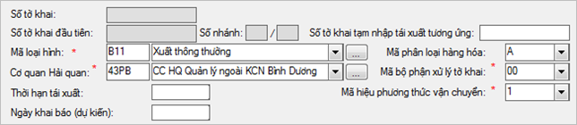
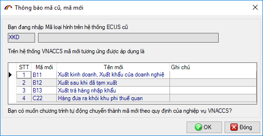
Ngoài ra bạn có thể nhấn vào nút có dấu (…) hoặc nhấn phím F3 để tìm và chọn loại hình cụ thể
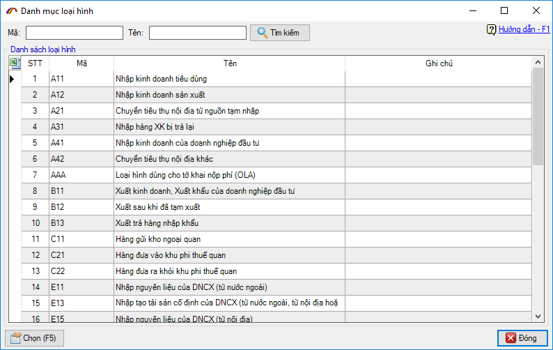
Cách chọn này sẽ áp dụng tượng tự đối với các danh mục khác từ hệ thống danh mục cũ như: Mã cảng địa điểm, cơ quan hải quan…
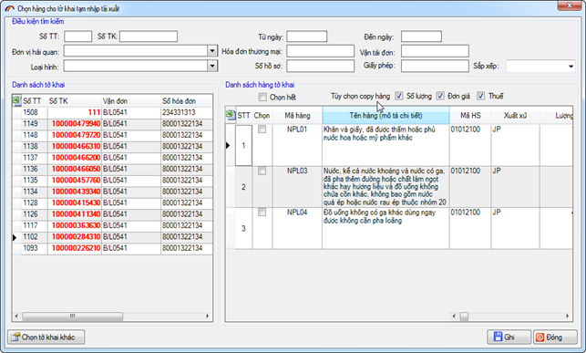
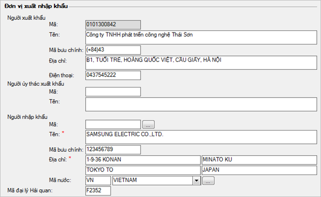
Nhập vào các thông tin về vận chuyển hàng hóa như số vận đơn, phương tiện vận chuyển, cảng địa điểm dỡ / xếp hàng.
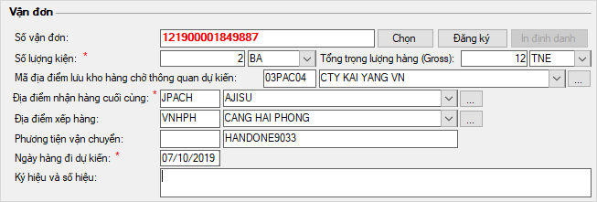
Thông tin vận đơn: Theo đề án quản lý giám sát hàng hóa cảng biển, cảng hàng không (kế hoạch 4098/KH-TCHQ), chỉ tiêu Số vận đơn của tờ khai xuất khẩu sẽ được nhập vào là Số định danh hàng hóa do hệ thống cấp trước khi doanh nghiệp khai báo tờ khai xuất khẩu.
Để có số định danh hàng hóa, bạn nhấn vào nút "Đăng ký" màn hình mới hiện ra như sau:
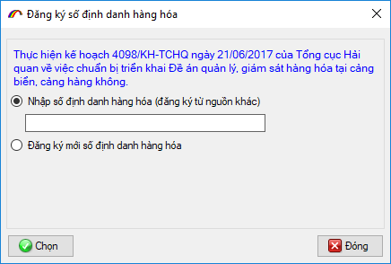
Nếu bạn đã đăng ký số định danh (đăng ký từ nguồn khác, máy tính khác CSDL) thì lựa "Nhập số định danh hàng hóa (đăng ký từ nguồn khác)" sau đó nhấn nút "Chọn".
Nếu đăng ký số đinh danh hàng hóa mới, bạn chọn lựa chọn "Đăng ký mới số định danh hàng hóa" sau đó nhấn nút "Chọn" để chuyển sang giao diện chức năng đăng ký:
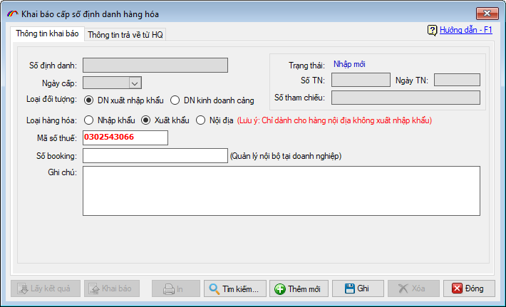
Nhấn khai báo và lấy phản hồi đến khi hệ thống trả về số định danh hàng hóa
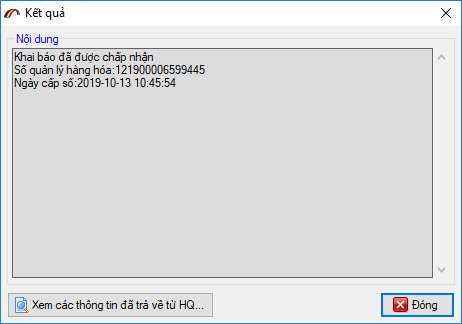
Màn hình kết quả khi hoàn tất việc xin định danh hàng hóa:
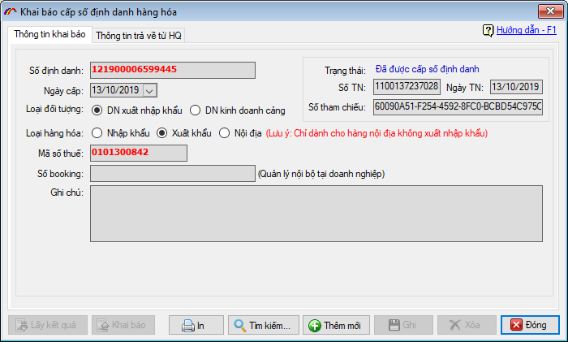
Bạn đóng chức năng đăng ký định danh hàng hóa để quay lại màn hình tờ khai, nhấn vào nút "Chọn" tại chỉ tiêu số vận đơn để chọn số định danh hàng hóa vừa đăng ký:
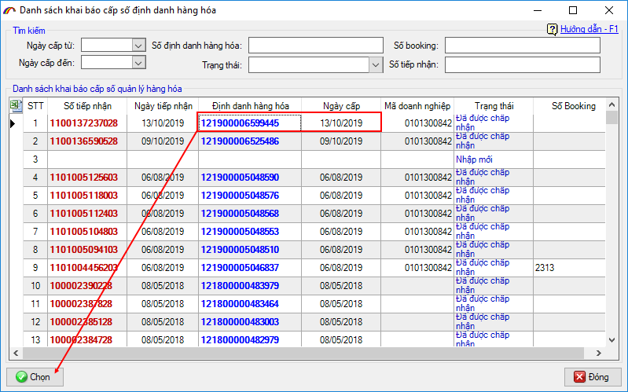
Lưu ý: Doanh nghiệp có thể chủ động đăng ký số định danh hàng hóa trước bằng cách vào menu "Tờ khai hải quan / Khai báo bổ sung" và chọn mục "Đăng ký số định danh hàng hóa":
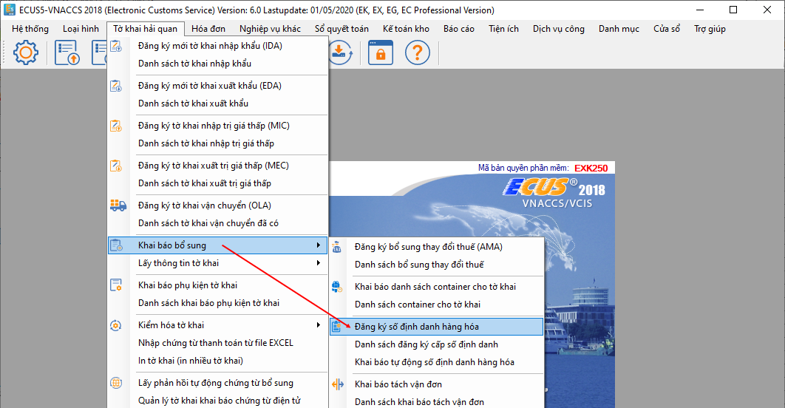
Tổng trọng lượng hàng hóa: Nhập vào tổng trọng lượng hàng và đơn vị tính trọng lượng theo đơn vị Kilogame – KGM, Tấn – TNE hoặc Pound – LBR, tổng trọng lượng có thể nhập vào tối đa 06 ký tự cho phần nguyên và 03 ký tự cho phần lẻ thập phân, ví dụ: 950000.525 , nếu là hàng vận chuyển theo đường hàng không phần lẻ thập phân chỉ được nhập tối đa 01 ký tự, ví dụ 950000.5. Nếu bạn nhập vào đợn vị trọng lượng là LBR thì sau khi khai báo EDA, hệ thống sẽ tự động quy đổi và trả về đơn vị là KGM.
Mã địa điểm lưu kho hàng chờ thông quan dự kiến: Nhập vào mã địa điểm lưu kho dự kiến cho hàng hóa chờ thông quan, mã địa điểm lưu kho có thể là địa điểm chịu sự giám sát của hải quan, các kho hàng, các công ty dịch vụ kho bãi hoặc kho công ty đã được đăng ký vào hệ thống, ví dụ hàng hóa được lưu kho chờ thông quan tại địa điểm 'CTY DVHH NOI BAI (NHAP)' chịu sự giám sát của Hải quan nội bài bạn chọn mã là '01B3A02'.
Phương tiện vận chuyển, nhập vào phương tiện vận chuyển tùy theo phương thức vận chuyển bạn đã chọn ở trên, ví dụ với phương thức là đường không thì phương tiện vận chuyển bạn nhập vào theo định dạng như sau:

Nhập mã phân loại giấy phép nhập khẩu trường hợp hàng hóa phải có giấy phép nhập khẩu, kết quả kiểm tra chuyên ngành trước khi thông quan ...


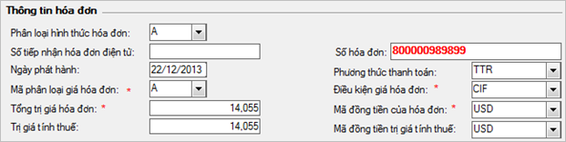
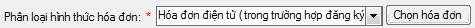


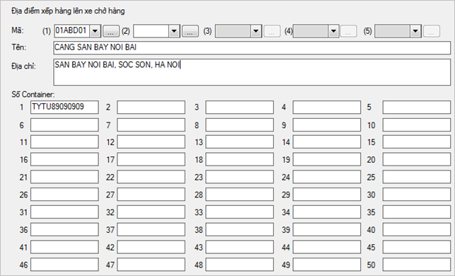
- Đối với tờ khai có áp dụng thuế tuyệt đối để khai báo bạn thiết lập bằng cách nhấn vào "Thiết lập cột dữ liệu" trên mục "Danh sách hàng" và chọn như hình sau:
- Đối với tờ khai có các khoản miễn giảm để khai báo bạn thiết lập khai báo bằng cách chọn "Thiết lập cột hiển thị" trên tab danh sách hàng và chọn như hình sau:
- Đối với tờ khai người khai tự nhập trị giá tính thuế và thuế suất người khai thiết lập bằng cách nhấn vào "Thiết lập cột hiển thị" trên mục "Danh sách hàng" và chọn như sau:
- Đối với tờ khai có thêm các văn bản pháp quy , người khai thiết lập khai báo bằng cách nhấn vào "Thiết lập cột hiển thị" trên mục "Danh sách hàng" và chọn như sau:
- Thông thường sẽ không có cột Trị giá tính thuế , Thuế suất và tiền thuế nhập khẩu (giống như giải thích trong phần nhập dòng hàng ở phần trên)
- Sau khi đã chuẩn bị file dữ liệu dòng hàng trên file excel, bạn nhấn phím F6 để tải dữ liệu từ file excel vào danh sách hàng trên tờ khai. Màn hình tải dữ liệu từ excel hiện ra như sau:
- Chọn sanh sách hàng từ danh mục có sẵn: Bạn nhấn F9 để chọn danh sách hàng từ danh mục hàng nhập khẩu hoặc danh mục nguyên phụ liệu, thiết bị, sản phẩm, hàng mẫu đã khai trước đó đối với loại hình Gia công, Sản xuất xuất khẩu, Chế xuất.
- Chức năng copy dòng hàng: Bạn chọn dòng hàng muốn copy sau đó nhấn F5 để tạo ra một dòng hàng tương tự.
Sau đây chúng tôi sẽ hướng dẫn chi tiết hai cách nhập liệu đối với danh sách hàng tờ khai
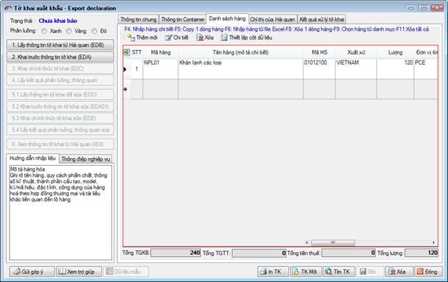
Đối với dòng hàng tờ khai VNACCS có một số lưu ý quan trọng như sau:
Chỉ tiêu Trị giá tính thuế và Thuế suất nhập khẩu:
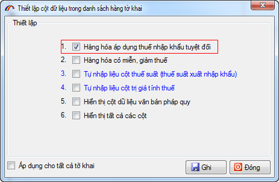

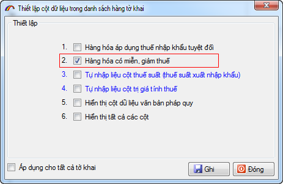
Khi đó khoản khai miễn/ giảm cho thuế xuất khẩu sẽ hiện ra trên danh sách hàng:

Khi khai báo mã miễn giảm, người khai cần lưu ý như sau:
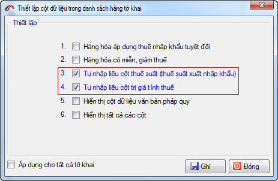


Khi đó trên danh sách hàng các chỉ tiêu về văn bản pháp quy hiện ra cho bạn nhập vào như sau:


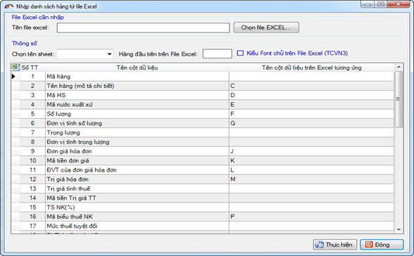
Để tải dữ liệu từ file excel bạn thực hiện các bước thiết lập sau:
Bước 1: Chọn file excel
Bạn chọn tới file excel đang có dữ liệu về hàng hóa nhập sẵn bằng cách nhấn vào "Chọn file EXCEL...".
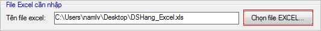
Bước 2: Chọn tên sheets trong file excel mà có chứa thông tin hàng hóa đang cần nhập tại ô "Chọn tên sheet" mục thông số.

Bước 3: Thiết lập dòng đầu tiên trên file excel có dữ liệu dòng hàng, như hình sau:

Trường hợp fonts chữ bạn nhập trên file excel là TCVN3, để tránh bị lỗi fonts khi import vào phần mềm bạn đánh dấu chọn vào mục 
Bước 4: Thiết lập các cột dữ liệu tương ứng với cột dữ liệu trên danh sách hàng như hình sau:

Sau khi thiết lập xong bạn chọn nút "Ghi" để chương trình tải dữ liệu từ file excel vào danh sách hàng của tờ khai.
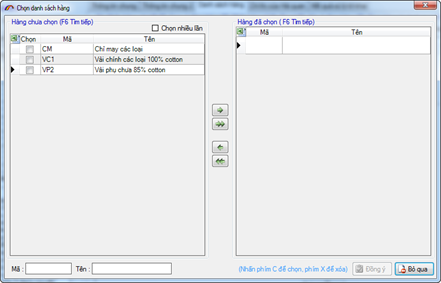

hoặc chuyển sang phần Khai báo tờ khai lên Hải quan


hoặc chuyển sang phần Khai báo tờ khai lên Hải quan